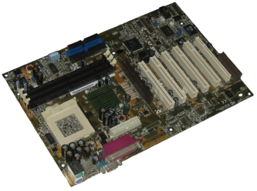

The motherboard is the body or mainframe of the computer, through which all other components interface. It is the central circuit board making up a complex electronic system. A motherboard provides the electrical connections by which the other components of the system communicate. The mother board includes many components such as: central processing unit (CPU), random access memory (RAM), firmware, and internal and external buses.
